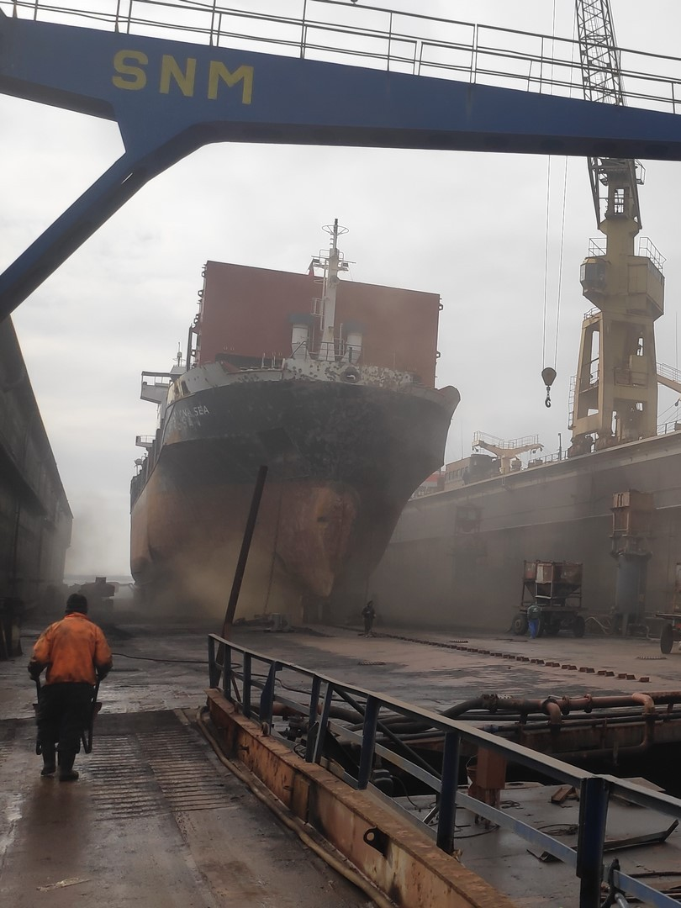
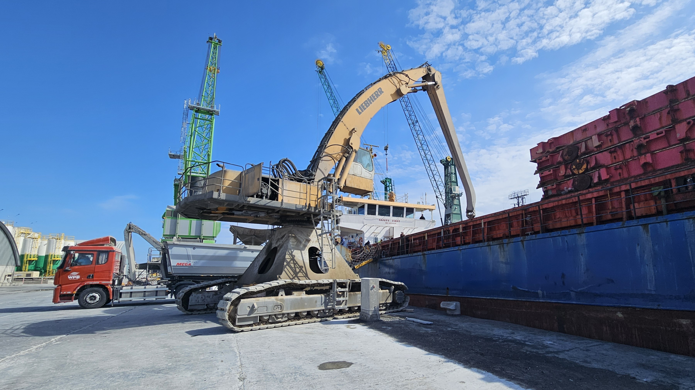

Marine & Cargo Surveyor in Midia Port, Romania

Contact SurveyorProviding independent marine and cargo survey services in Midia Port for shipowners, charterers, operators, and insurers.
The main survey services available in Midia Port include:
Services are available in Midia Port and nearby areas.
